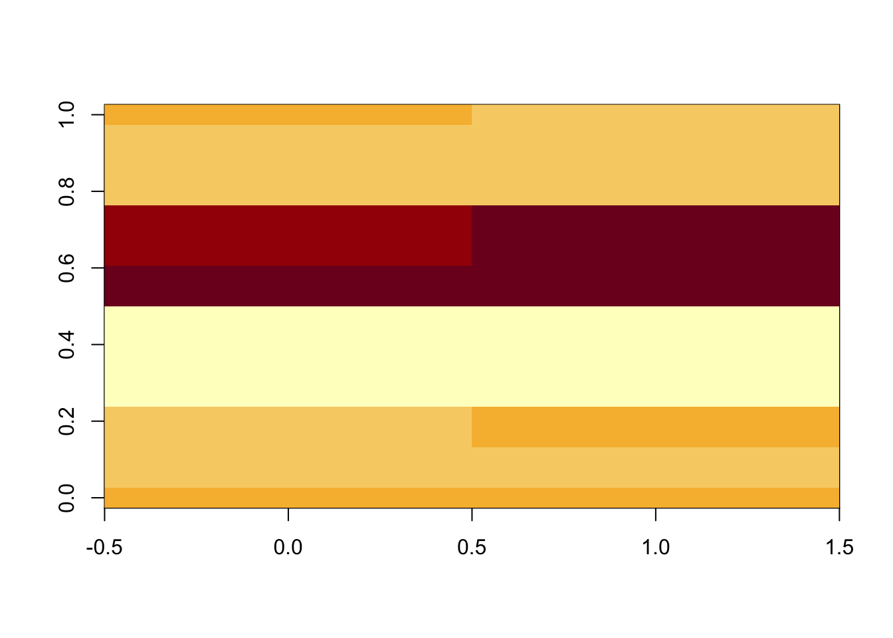

Chapter 6 Peaks normalization
6.1 Peak misidentification
- Isomer
Use seperation methods such as chromatography, ion mobility MS, MS/MS. Reversed-phase ion-pairing chromatography and HILIC is useful and chemical derivatization is another options.
- Interfering compounds
20ppm is the least resolution and accuracy
- In-source degradation products
6.2 RSD Filter
Some peaks need to be rule out due to high RSD%. See Exprimental design(DoE)
6.3 Power Analysis Filter
As shown in Exprimental design(DoE), the power analysis in metabolomics is ad-hoc since you don’t know too much before you perform the experiment. However, we could perform power analysis after the experiment done. That is, we just rule out the peaks with a lower power in exsit Exprimental design.
6.4 Normalization
Variances among the samples across all the extracted peaks might be affected by factors other than the experiment design. To make the samples comparable, normailization across the samples are always needed. There are more than 20 methods to make normalization. We could devided those methods into two category: unsupervised and supervised.
Unsupervised methods only consider the normalization peaks intensity distribution across the samples. For example, quantile calibration try to make the intensity distribution among the samples similar. Such methods are preferred to explore the inner structures of the samples. Internal standards or pool QC samples also belong to this category. However, it’s hard to take a few peaks standing for all peaks extracted.
Supervised methods will use the group information or batch information in experimental design to normalize the data. A linear model is always used to model the unwanted variances and remove them for further analysis.
Since the real batch effects are always unknown, it’s hard to make validation for different normalization methods. Wu et.al preferred to make comparision between new methods and conventional methods(Wu and Li 2016). Li et.al developed NOREVA to make comparision among 25 correction method(Li et al. 2017). Another idea is use spiked-in samples to validate the methods(Franceschi et al. 2012), which might be good for targeted analysis instead of non-targeted analysis.
Relative log abundance (RLA) plots(De Livera et al. 2012) and heatmap often used to show the variances among the samples.
(Thonusin et al. 2017) some methods for batch correction in excel
6.4.1 Unsupervised methods
6.4.1.1 Distribution of intensity
Intensity collects from LC/GC-MS always showed a right-skewed distribution. Log transformation is often necessary for further statistical analysis. In some case, a Log-transformated intensity could be visulizated easily.
6.4.1.2 Centering
For peak p of sample s in batch b, the corrected abundance I is:
\[\hat I_{p,s,b} = I_{p,s,b} - mean(I_{p,b}) + median(I_{p,qc})\]
For example, we have the intensities of one peak from ten samples in two batches like the following demo:
set.seed(42)
# raw data
I = c(rnorm(10,mean = 0, sd = 0.5),rnorm(10,mean = 1, sd = 0.5))
# batch
B = c(rep(0,10),rep(1,10))
# qc
Iqc = c(rnorm(1,mean = 0, sd = 0.5),rnorm(1,mean = 1, sd = 0.5))
# corrected data
Icor = I - c(rep(mean(I[1:10]),10),rep(mean(I[11:20]),10)) + median(Iqc)
# plot the result
plot(I)
plot(Icor)
6.4.1.3 Scaling
For peak p of sample s in certain batch b, the corrected abundance I is:
\[\hat I_{p,s,b} = \frac{I_{p,s,b} - mean(I_{p,b})}{std_{p,b}} * std_{p,qc,b} + mean(I_{p,qc,b})\]
For example, we have the intensities of one peak from ten samples in two batches like the following demo:
set.seed(42)
# raw data
I = c(rnorm(10,mean = 0, sd = 0.3),rnorm(10,mean = 1, sd = 0.5))
# batch
B = c(rep(0,10),rep(1,10))
# qc
Iqc = c(rnorm(1,mean = 0, sd = 0.3),rnorm(1,mean = 1, sd = 0.5))
# corrected data
Icor = (I - c(rep(mean(I[1:10]),10),rep(mean(I[11:20]),10)))/c(sd(I[1:10]),sd(I[11:20]))*c(rep(0.3,10),rep(0.5,10)) + Iqc[1]
# plot the result
plot(I)
plot(Icor)
6.4.1.4 Quantile
The idea of quantile calibration is that alignment of the intensities in certain samples according to quantiles in each sample.
Here is the demo:
set.seed(42)
a <- rnorm(1000)
# b sufferred batch effect with a bias of 10
b <- rnorm(1000,10)
hist(a,xlim=c(-5,15),breaks = 50)
hist(b,col = 'black', breaks = 50, add=T)
# quantile normalized
cor <- (a[order(a)]+b[order(b)])/2
# reorder
cor <- cor[order(order(a))]
hist(cor,col = 'red', breaks = 50, add=T)6.4.1.5 Ratio based calibraton
This method calibrates samples by the ratio between qc samples in all samples and in certain batch.For peak p of sample s in certain batch b, the corrected abundance I is:
\[\hat I_{p,s,b} = \frac{I_{p,s,b} * median(I_{p,qc})}{mean_{p,qc,b}}\]
set.seed(42)
# raw data
I = c(rnorm(10,mean = 0, sd = 0.3),rnorm(10,mean = 1, sd = 0.5))
# batch
B = c(rep(0,10),rep(1,10))
# qc
Iqc = c(rnorm(1,mean = 0, sd = 0.3),rnorm(1,mean = 1, sd = 0.5))
# corrected data
Icor = I * median(c(rep(Iqc[1],10),rep(Iqc[2],10)))/mean(c(rep(Iqc[1],10),rep(Iqc[2],10)))
# plot the result
plot(I)plot(Icor)
6.4.1.6 Linear Normalizer
This method initially scales each sample so that the sum of all peak abundances equals one. In this study, by multiplying the median sum of all peak abundances across all samples,we got the corrected data.
set.seed(42)
# raw data
peaksa <- c(rnorm(10,mean = 10, sd = 0.3),rnorm(10,mean = 20, sd = 0.5))
peaksb <- c(rnorm(10,mean = 10, sd = 0.3),rnorm(10,mean = 20, sd = 0.5))
df <- rbind(peaksa,peaksb)
dfcor <- df/apply(df,2,sum)* sum(apply(df,2,median))
image(df)
image(dfcor)
6.4.1.7 Internal standards
\[\hat I_{p,s} = \frac{I_{p,s} * median(I_{IS})}{I_{IS,s}}\]
Some methods also use pooled calibration samples and multiple internal standard strategy to correct the data(???). Also some methods only use QC samples to handle the data(Kuligowski et al. 2015).
6.4.2 Supervised methods
6.4.2.1 Regression calibration
Considering the batch effect of injection order, regress the data by a linear model to get the calibration.
6.4.2.2 Batch Normalizer
Use the total abundance scale and then fit with the regression line(Wang, Kuo, and Tseng 2013).
6.4.2.3 Surrogate Variable Analysis(SVA)
We have a data matrix(M*N) with M stands for indentity peaks from one sample and N stand for individual samples. For one sample, \(X = (x_{i1},...,x_{in})^T\) stands for the normalized intensities of peaks. We use \(Y = (y_i,...,y_m)^T\) stands for the group infomation of our data. Then we could build such modles:
\[x_{ij} = \mu_i + f_i(y_i) + e_{ij}\]
\(\mu_i\) stands for the baseline of the peak intensities in a normal state. Then we have:
\[f_i(y_i) = E(x_{ij}|y_j) - \mu_i\]
stands for the biological variations caused by the our group, for example, whether treated by pollutions or not.
However, considering the batch effects, the real model could be:
\[x_{ij} = \mu_i + f_i(y_i) + \sum_{l = 1}^L \gamma_{li}p_{lj} + e_{ij}^*\] \(\gamma_{li}\) stands for the peak-specific coefficient for potentical factor \(l\). \(p_{lj}\) stands for the potential factors across the samples. Actually, the error item \(e_{ij}\) in real sample could always be decomposed as \(e_{ij} = \sum_{l = 1}^L \gamma_{li}p_{lj} + e_{ij}^*\) with \(e_{ij}^*\) standing for the real random error in certain sample for certain peak.
We could not get the potential factors directly. Since we don’t care the details of the unknown factors, we could estimate orthogonal vectors \(h_k\) standing for such potential factors. Thus we have:
\[ x_{ij} = \mu_i + f_i(y_i) + \sum_{l = 1}^L \gamma_{li}p_{lj} + e_{ij}^*\\ = \mu_i + f_i(y_i) + \sum_{k = 1}^K \lambda_{ki}h_{kj} + e_{ij} \]
Here is the details of the algorithm:
The algorithm is decomposed into two parts: detection of unmodeled factors and construction of surrogate variables
6.4.2.3.1 Detection of unmodeled factors
Estimate \(\hat\mu_i\) and \(f_i\) by fitting the model \(x_{ij} = \mu_i + f_i(y_i) + e_{ij}\) and get the residual \(r_{ij} = x_{ij}-\hat\mu_i - \hat f_i(y_i)\). Then we have the residual matrix R.
Perform the singular value decompositon(SVD) of the residual matrix \(R = UDV^T\)
Let \(d_l\) be the \(l\)th eigenvalue of the diagonal matrix D for \(l = 1,...,n\). Set \(df\) as the freedom of the model \(\hat\mu_i + \hat f_i(y_i)\). We could build a statistic \(T_k\) as:
\[T_k = \frac{d_k^2}{\sum_{l=1}^{n-df}d_l^2}\]
to show the variance explained by the \(k\)th eigenvalue.
Permute each row of R to remove the structure in the matrix and get \(R^*\).
Fit the model \(r_{ij}^* = \mu_i^* + f_i^*(y_i) + e^*_{ij}\) and get \(r_{ij}^0 = r^*_{ij}-\hat\mu^*_i - \hat f^*_i(y_i)\) as a null matrix \(R_0\)
Perform the singular value decompositon(SVD) of the residual matrix \(R_0 = U_0D_0V_0^T\)
Compute the null statistic:
\[ T_k^0 = \frac{d_{0k}^2}{\sum_{l=1}^{n-df}d_{0l}^2} \]
Repeat permuting the row B times to get the null statistics \(T_k^{0b}\)
Get the p-value for eigengene:
\[p_k = \frac{\#{T_k^{0b}\geq T_k;b=1,...,B }}{B}\]
- For a significance level \(\alpha\), treat k as a significant signature of residual R if \(p_k\leq\alpha\)
6.4.2.3.2 Construction of surrogate variables
Estimate \(\hat\mu_i\) and \(f_i\) by fitting the model \(x_{ij} = \mu_i + f_i(y_i) + e_{ij}\) and get the residual \(r_{ij} = x_{ij}-\hat\mu_i - \hat f_i(y_i)\). Then we have the residual matrix R.
Perform the singular value decompositon(SVD) of the residual matrix \(R = UDV^T\). Let \(e_k = (e_{k1},...,e_{kn})^T\) be the \(k\)th column of V
Set \(\hat K\) as the significant eigenvalues found by the first step.
Regress each \(e_k\) on \(x_i\), get the p-value for the association.
Set \(\pi_0\) as the proportion of the peak intensitity \(x_i\) not associate with \(e_k\) and find the numbers \(\hat m =[1-\hat \pi_0 \times m]\) and the indices of the peaks associated with the eigenvalues
Form the matrix \(\hat m_1 \times N\), this matrix\(X_r\) stand for the potiential variables. As was done for R, get the eigengents of \(X_r\) and denote these by \(e_j^r\)
Let \(j^* = argmax_{1\leq j \leq n}cor(e_k,e_j^r)\) and set \(\hat h_k=e_j^r\). Set the estimate of the surrogate variable to be the eigenvalue of the reduced matrix most correlated with the corresponding residual eigenvalue. Since the reduced matrix is enriched for peaks associated with this residual eigenvalue, this is a principled choice for the estimated surrogate variable that allows for correlation with the primary variable.
Employ the \(\mu_i + f_i(y_i) + \sum_{k = 1}^K \gamma_{ki}\hat h_{kj} + e_{ij}\) as te estimate of the ideal model \(\mu_i + f_i(y_i) + \sum_{k = 1}^K \gamma_{ki}h_{kj} + e_{ij}\)
This method could found the potentical unwanted variables for the data. SVA were introduced by Jeff Leek(Leek et al. 2012; Leek and Storey 2007, 2008) and EigenMS package implement SVA with modifications including analysis of data with missing values that are typical in LC-MS experiments(Karpievitch et al. 2014).
6.4.2.4 RUV (Remove Unwanted Variation)
This method’s performance is similar to SVA. Instead find surrogate variable from the whole dataset. RUA use control or pool QC to find the unwanted variances and remove them to find the peaks related to experimental design. However, we could also empirically estimate the control peaks by linear mixed model. RUA-random(Livera et al. 2015) furthor use linear mixed model to estimate the variances of random error. This method could be used with suitable control, which is commen in metabolomics DoE.
6.4.2.5 RRmix
RRmix also use a latent factor models correct the data(Jr et al. 2017). This method could be treated as linear mixed model version SVA. No control samples are required and the unwanted variances could be removed by factor analysis. This method might be the best choise to remove the unwanted variables with commen experiment design.
6.5 Software
BatchCorrMetabolomics is for improved batch correction in untargeted MS-based metabolomics
MetNorm show Statistical Methods for Normalizing Metabolomics Data.
BatchQC could be used to make batch effect simulation.
Noreva could make online batch correction.
References
Wu, Yiman, and Liang Li. 2016. “Sample Normalization Methods in Quantitative Metabolomics.” Journal of Chromatography A, Editors’ choice x, 1430 (January): 80–95. https://doi.org/10.1016/j.chroma.2015.12.007.
Li, Bo, Jing Tang, Qingxia Yang, Shuang Li, Xuejiao Cui, Yinghong Li, Yuzong Chen, Weiwei Xue, Xiaofeng Li, and Feng Zhu. 2017. “NOREVA: Normalization and Evaluation of MS-Based Metabolomics Data.” Nucleic Acids Res 45 (W1): W162–W170. https://doi.org/10.1093/nar/gkx449.
Franceschi, Pietro, Domenico Masuero, Urska Vrhovsek, Fulvio Mattivi, and Ron Wehrens. 2012. “A Benchmark Spike-in Data Set for Biomarker Identification in Metabolomics.” J. Chemometrics 26 (1-2): 16–24. https://doi.org/10.1002/cem.1420.
De Livera, Alysha M., Daniel A. Dias, David De Souza, Thusitha Rupasinghe, James Pyke, Dedreia Tull, Ute Roessner, Malcolm McConville, and Terence P. Speed. 2012. “Normalizing and Integrating Metabolomics Data.” Anal. Chem. 84 (24): 10768–76. https://doi.org/10.1021/ac302748b.
Thonusin, Chanisa, Heidi B. IglayReger, Tanu Soni, Amy E. Rothberg, Charles F. Burant, and Charles R. Evans. 2017. “Evaluation of Intensity Drift Correction Strategies Using MetaboDrift, a Normalization Tool for Multi-Batch Metabolomics Data.” Journal of Chromatography A, Pushing the boundaries of chromatography and electrophoresis, 1523 (Supplement C): 265–74. https://doi.org/10.1016/j.chroma.2017.09.023.
Kuligowski, Julia, Ángel Sánchez-Illana, Daniel Sanjuán-Herráez, Máximo Vento, and Guillermo Quintás. 2015. “Intra-Batch Effect Correction in Liquid Chromatography-Mass Spectrometry Using Quality Control Samples and Support Vector Regression (QC-SVRC).” Analyst 140 (22): 7810–7. https://doi.org/10.1039/C5AN01638J.
Wang, San-Yuan, Ching-Hua Kuo, and Yufeng J. Tseng. 2013. “Batch Normalizer: A Fast Total Abundance Regression Calibration Method to Simultaneously Adjust Batch and Injection Order Effects in Liquid Chromatography/Time-of-Flight Mass Spectrometry-Based Metabolomics Data and Comparison with Current Calibration Methods.” Anal. Chem. 85 (2): 1037–46. https://doi.org/10.1021/ac302877x.
Leek, Jeffrey T., W. Evan Johnson, Hilary S. Parker, Andrew E. Jaffe, and John D. Storey. 2012. “The Sva Package for Removing Batch Effects and Other Unwanted Variation in High-Throughput Experiments.” Bioinformatics 28 (6): 882–83. https://doi.org/10.1093/bioinformatics/bts034.
Leek, Jeffrey T., and John D. Storey. 2007. “Capturing Heterogeneity in Gene Expression Studies by Surrogate Variable Analysis.” PLOS Genet 3 (9): e161. https://doi.org/10.1371/journal.pgen.0030161.
Leek, Jeffrey T., and John D. Storey. 2007. “Capturing Heterogeneity in Gene Expression Studies by Surrogate Variable Analysis.” PLOS Genet 3 (9): e161. https://doi.org/10.1371/journal.pgen.0030161.
2008. “A General Framework for Multiple Testing Dependence.” PNAS 105 (48): 18718–23. https://doi.org/10.1073/pnas.0808709105.Karpievitch, Yuliya V., Sonja B. Nikolic, Richard Wilson, James E. Sharman, and Lindsay M. Edwards. 2014. “Metabolomics Data Normalization with EigenMS.” PLOS ONE 9 (12): e116221. https://doi.org/10.1371/journal.pone.0116221.
Livera, Alysha M. De, Marko Sysi-Aho, Laurent Jacob, Johann A. Gagnon-Bartsch, Sandra Castillo, Julie A. Simpson, and Terence P. Speed. 2015. “Statistical Methods for Handling Unwanted Variation in Metabolomics Data.” Anal. Chem. 87 (7): 3606–15. https://doi.org/10.1021/ac502439y.
Jr, Stephen Salerno, Mahya Mehrmohamadi, Maria V. Liberti, Muting Wan, Martin T. Wells, James G. Booth, and Jason W. Locasale. 2017. “RRmix: A Method for Simultaneous Batch Effect Correction and Analysis of Metabolomics Data in the Absence of Internal Standards.” PLOS ONE 12 (6): e0179530. https://doi.org/10.1371/journal.pone.0179530.